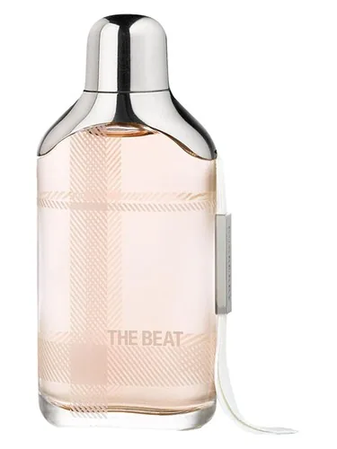

The Beat
- Para mujer
- Familia cítrica
- Lanzado en 2008
Con caja$1,850Te lo conseguimos en 2 días a 1 semanaSin caja$850Te lo conseguimos en 2 días a 1 semana
No disponible: te lo conseguimos en 2 días a 1 semana
Cómo huele
Cítrico
Almizclado
Atalcado
Amaderado
Verde
Sus notas
Salida
pimienta rosanaranja mandarinacardamomobergamota
Corazón
téiriscampanilla
Fondo
almizcle blancovetivercedro
The Beat de Burberry es un perfume cítrico para mujer, lanzado en 2008. Abre con pimienta rosa y naranja mandarina, en el corazón tiene té y iris y deja un fondo de almizcle blanco y vetiver. Lo que más se siente: cítrico, almizclado y atalcado.